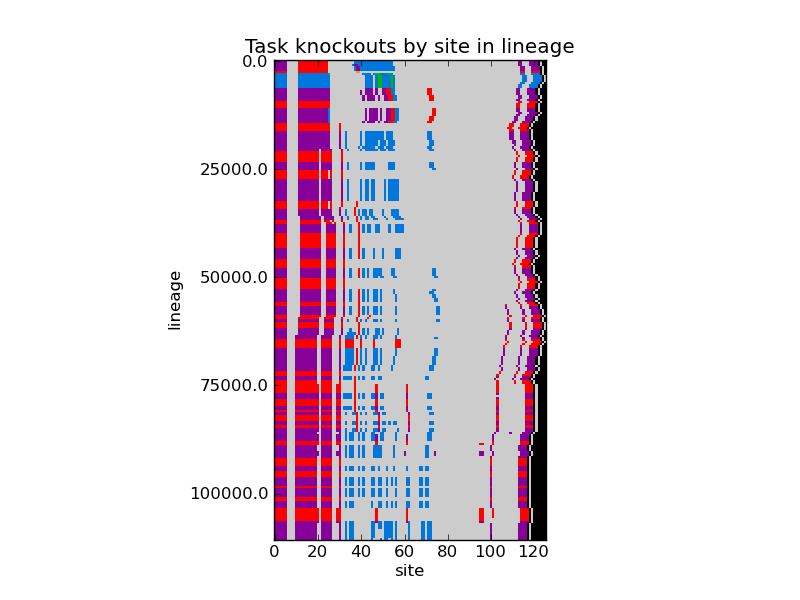

Week of March 19, 2012
Monday 3/19/12
10:19 PM
STATUS:
- Re-creating the lineages with html alignments so I can eyeball it.
- Preparing my weekly status.
LOG:
- Set analyze mode regenerating the lineage alignments, and mapping the tasks so I can see the phenotypic effect of every mutation.
- Need to write a script to extract the info and create a visualization of some sort, identifying the mutations that affect phenotype only, and coloring where in the genome (relative to the tasks) those mutations occur.
- Ran this to generate the coefficient of variation. It may be slightly half-assed because I treated the NANs as 0s, along with means of 0. :/ Don’t think this measure will be very useful:
rosiec@atlantis:~/research/Devolab Research/evolution_of_modularity/raw_data/069/INTERTWINED$ rm *gapcv.csv; ../../../../scripts/common_modules_and_helper_scripts/combine_columns_by_condition.py -s "," -f "a / b" noreward___backbone_task_gapstd.csv noreward___backbone_task_gapmean.csv >> noreward___backbone_task_gapcv.csv; ../../../../scripts/common_modules_and_helper_scripts/combine_columns_by_condition.py -s "," -f "a / b" punish___backbone_task_gapstd.csv punish___backbone_task_gapmean.csv >> punish___backbone_task_gapcv.csv ; ../../../../scripts/common_modules_and_helper_scripts/combine_columns_by_condition.py -s "," -f "a / b" control___backbone_task_gapstd.csv control___backbone_task_gapmean.csv >> control___backbone_task_gapcv.csv ; ../../../../scripts/common_modules_and_helper_scripts/combine_columns_by_condition.py -s "," -f "a / b" punish___fluct_task_gapstd.csv punish___fluct_task_gapmean.csv >> punish___fluct_task_gapcv.csv ; ../../../../scripts/common_modules_and_helper_scripts/combine_columns_by_condition.py -s "," -f "a / b" noreward___fluct_task_gapstd.csv noreward___fluct_task_gapmean.csv >> noreward___fluct_task_gapcv.csv ; ../../../../scripts/common_modules_and_helper_scripts/combine_columns_by_condition.py -s "," -f "a / b" control___fluct_task_gapstd.csv control___fluct_task_gapmean.csv >> control___fluct_task_gapcv.csv
- REVIEW
- Job 069_Mutation_Rate_0.00075__Written_Ancestors
- Written separated ancestor
- Evolved intertwined ancestor
- 30k updates
- 071_Mut_Rate_0.001__Written_Ancestors
- Written separated ancestor
- Evolved intertwined ancestor
- 30k updates
- Just submitted Job 077, which is 069 (0.00075 mutation rate), for 60k updates. This should be long enough to get the modularity basement.
Tuesday 3/20/12
3:42 PM
STATUS:
- Zipping up and pulling down 077.
Wednesday 3/21/12
4:33 PM
STATUS:
- 077 is screwed up. I didn’t analyze 30-60k, and it was missing the script to turn the data to organisms. Fixed the problems, and resubmitted.
- Converted all of my notes files to .doc format, since it compresses way better than RTF, and dropbox can open it just fine. I can’t open it in Notability, but that’s ok, because Notability couldn’t see the images in my RTFs anyway, which is part of the point.
- Changed the numbering scheme of my notebook to be YY.DDD.n (DDD is day of year). Week of X have an _ instead of an n. Renumbered my old notebooks/notes/etc. to match. Now everything sorts gracefully.
LOG:
- Working on creating a script to produce a plot of all the organisms tasks arrangements for a lineage. Modifying “draw_map_task.py” to take in a stack of map task files which I have defined the columns to look at for the various things. … Does it already do this? Sort of

(above – punish separated (left), punish intertwined (right) )
- Generated the above graphs.
- This is GREAT. The vast majority of the backbone task overlaps with the fluctuating task (the purple), and the blue sections are those bits of the fluctuating task that are kicked off to the right. The effect is really clear in the intertwined ancestor (right).
- The left side shows an interesting effect. I looks like MUCH of the backbone task can be coopted to perform the fluctuating task, because we get that from a SINGLE mutation.
(above – noreward separated (left), noreward intertwined (right) )
- TODO: Double-check that there aren’t bugs. Clearly, my fitness values aren’t getting accounted for, because my left-most bit and right-most bit (repro loop), show up as overlapping, which doesn’t make sense. The rest looks ok, but best make sure.
- TODO: Look at including mutation information, and somehow high-light degenerate sites (sites that didn’t mutate, but are now non-functional). Use the alignment for this (lineage.dat).
- TODO: Find some way to identify what phase the task organisms were in. From lineage.dat maybe?
Thursday 3/22/12
1:14 AM
STATUS:
- Created derivative scripts from draw_task:
- draw_map_task__using_lineage_and_alignment.py, which draws the following. Singlepoint mutations are in white.
- TODO:
- Add support for in/dels
- Add support for degenerate sections
- Add support for displaying aligned sequences. (this is probably a prereq for the above two items)
python ../../../../../scripts/evolution_of_modularity_pipelines/draw_map_task__using_lineage_and_alignment.py -v -a ~/Desktop/punish_sep_29_lineage_tasks__2.png 5 6 8 ../../lineage_results_069/punish_separated_690029__detail-30000.spop.gz_lineage.dat ./
Friday 3/23/12
2:39 PM
STATUS:
- Generated reasonably accurate lineage graphs. Yay! These get generated on a run by run basis, so they can’t really go in makegraphs.py… or can they? :P
/Volumes/rosiec/research/Devolab Research/evolution_of_modularity/raw_data/077/SEPARATED$ for i in *_??????; do if [ -e $i/data ] ; then cd $i/data/; python ../../../../../../scripts/evolution_of_modularity_pipelines/draw_map_task__using_lineage_and_alignment.py --aligned_lineage_map --lineage_map --task_map --mutation_map --aligned_task_map --show_mutations --show_phase --title "$i" -v -a ../.png 5 6 8 lineage.dat ./phenotype/; cd ../../ ; fi ; done ;
- Generated functional modularity graphs for 077. Looks like the controls STILL haven’t leveled off, though no-reward definitely did. So, I started job 078 to run for 100k updates, and hopefully that will be the end of it.
- Trying out a new template for describing my experiments:
- Job 078_Mut_Rate_0.00075__Written_Ancestors__100k
- General Settings:
- 100k updates
- Mut Rate 0.00075
- No resources
- Experimental Settings:
- Treatment – Control
- Constant environment
- XOR – POW 3 – Max 1
- EQU – POW 5 – Max 1
- Treatment – No Reward
- Fluctuating Environment – 1k cycle in two parts
- Startup – 0-1k updates
- Experiment – 1k+ Fluct starts
- 1st half – 500 updates
- EQU – POW 0
- XOR – POW 3 (backbone task)
- 2nd half – 500 updates
- EQU – POW 5
- XOR – POW 3 (backbone task)
- Treatment – Punish
- Fluctuating Environment – 1k cycle in two parts
- Startup – 0-1k updates
- Experiment – 1k+ Fluct starts
- 1st half – 500 updates
- EQU – POW -5
- XOR – POW 3 (backbone task)
- 2nd half – 500 updates
- EQU – POW 5
- XOR – POW 3 (backbone task)
- Also, still working on getting the legends to show up right, on both the lineage map figures, and on the regular figures (above)
- TODO: figure out how to measure the mutational rates in and out of functional areas. Based on the lineage maps, I think I need to measure the following:
- Mutations in functional areas
- Mutations in areas that overlap
- Mutations in areas that do not overlap
- Mutations in degenerate areas
- Mutations in the rest of it (including the death-zones)
Thankfully, I have the lineage_map script that already collects a lot of this information, so I can just base my analysis script on that to pull it the data out of the lineage.dat and task_map.dat. They seem to go pretty fast, so, while ultimately, I may integrate them into the hpcc work-flow, I don’t really have to.
7:15 PM
THOUGHTS:
- As I’m thinking about the problem of what to look at, it occurs to me that where the mutations happen is less important than what they affect. You can have mutations that do nothing while being right on top of a section, and you can have mutations far away that do a lot elsewhere.
So, maybe I should be thinking about measuring how many mutations are in a genome, and how many sites they changed the function of. If there are multiple mutations, it will be impossible to ascribe responsibility to individual ones, but we can just partition that out.
So, there are a few different classes of mutations:
- Functional site mutations
- Upstream/downstream mutations that affect function
- Mutations that do not affect function at all. (silent mutations)
What functions? Can we distinguish this way?
- Functions that are at particular types of sites?
- Backbone, Fluct, and Overlapping?
So, compare the sites that are affected by mutations.
- Count the mutations
- Count and identify the functional sites that are affected.
Because the comparisons are purely parent to child, there are no hidden mechanisms, and the whole flow makes sense because we are looking at the ultimate survivor, so historical contingency works in that survivor’s favor.
- Graph this out by taking a count of each mutation/effect type and graph a line for each by lineage.
Further, if we want to show a general environmental flow, we can look at the lineages of the entire historical population, which should show progressively more skewed mutational effects (assuming that the environment is having this effect).
- You can do this by looking at every entry in the detail file, and just compare to the parent and weight by num_cpu.
Sunday 3/25/12
11:35 AM
STATUS:
- Submitted job 079 (200k) – to see if some of the trends from 078 (below) continue to play out over 200k updates.
- Generated plots from 078 (100k).
- So, when you run things out longer, you get a LOT of fragmentation in the No Reward scenario, particularly the intertwined ancestor. Two thoughts about what is happening.
- Over time, in No Reward, the fluctuating task goes from SelectionàDriftàSelectionàDrift. This leads to fragmentation.
- In the intertwined treatment, when you fragment, you could go anywhere, and frequently do. Whereas in the separated treatment, you have the separate task acting as a redundant space to spread into. Because it is relatively close to you, the gap measures are smaller.
- Prediction. Over a long enough time-span, the separated ancestor will end up fragmenting more too, as it chews up the opportunities presented by the nearby redundant instructions.
- Functional modularity is still acting as seen before, though there doesn’t seem to be a difference in the separated treatment between where the overlap level ended up. This bit seems really variable depending on your seed. The intertwined treatment doesn’t seem nearly as variable, but you can see that after a while, the no-reward treatment climbs up toward the punishment treatment.
- A lot of this is back to the drawing board because when I dropped the mutation rate, it takes that many times as long for things to settle out. And because there are longer “ecological” periods, the population dynamics and the reward dynamics come to the fore. Which I guess is fine…
- High Mutation Rate * Low Time != Low Mutation Rate * High Time. :(
- This whole thing seems really sloppy to me. :/